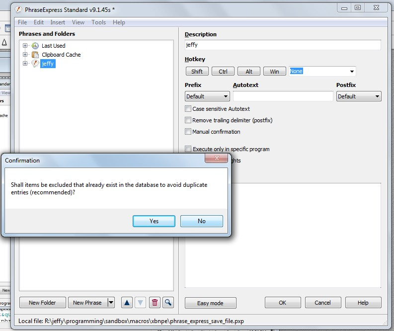
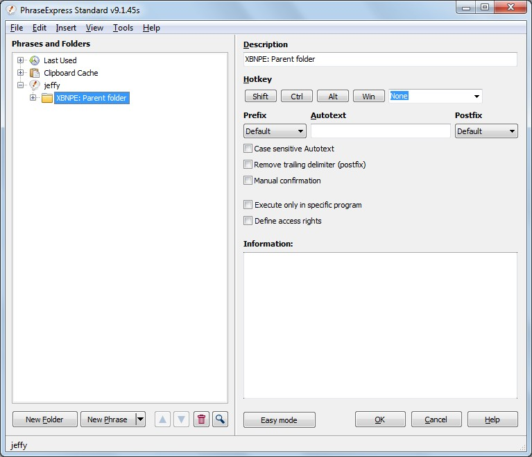

top [PREV -- NEXT] XBN-PhraseExpress installation: Step-by-stepBefore it completes, you will be asked to suppress duplicate phrases. Press [No].
("Duplicate" is defined as "has the same phrase-name". While it is unlikely that there are duplicate phrases, this at least gives you the opportunity to choose between them during some future execution. Eventually this allows you to resolve those conflicts, by either deleting a truly-duplicate phrase, or changing the name of a different phrase that happens to have the same name--along with all its phrase-calls.)

top [PREV -- NEXT] XBN-PhraseExpress installation: Step-by-stepAll XBN-PhraseExpress phrases are now in the PhraseExpress application. Proceed to the next step.

top [PREV -- NEXT] XBN-PhraseExpress installation: Step-by-stepThere are four XBNPE "global-configuration-variables" that must be set:
zROOT_DIR_XBNPE_PARENTzWIN_DIR_DESKTOP (optional)zzTPTxtDefaultWordWrapOnOrESzzTPTxtDefaultStripTrailingWSOnOrESVerify the directory values by copying the phrase-name (such as "zROOT_DIR_XBNPE_PARENT") and then, in the open-dialog's "File name" field, executing "cpcb", and pressing enter to confirm it.
Warning: It is strongly recommended that you edit these values in the on-disk text-files (plain-text phrase-files), and then import them. This is true when editing any values during this configuration process, and throughout much of the projects in XBN-PhraseExpress. Editing phrases directly in the PhraseExpress application, at they very least, during this installation processes, is strongly discouraged.
XBN-PhraseExpress--at least at a bare-minimum--is now installed.
Proceed to the next step to install the foundational XBNPE projects.
top [PREV -- NEXT] XBN-PhraseExpress installation: Step-by-stepSet your TPKC-user-directory name into its phrase-file, and import it to its required location in PhraseExpress.
If you have no custom key-commands, and have chosen the "tp_frsh_instl" TPKC-user-dir name, then proceed here.
Otherwise, proceed here.
top [PREV -- NEXT] XBN-PhraseExpress installation: Step-by-stepSince you have no custom key-commands, almost all of the rest of the installation process has been done for you. Follow this and the next step to complete your installation.
Assign exactly the following, in
TextPad > Config > Preferences > Keyboard
| Category | Command | Key-command |
Edit |
EditCopyTaggedLines |
Ctrl+Shift+Alt+. |
EditCutTaggedLines |
Ctrl+Shift+Alt+, |
|
EditDupLine |
Ctrl+Shift+Alt+K |
|
File |
FileClose |
Alt+W |
Search |
MatchCaseSet |
Ctrl+Alt+F, C |
MatchCaseClear |
Ctrl+Shift+Alt+F, C |
|
MatchWordSet |
Ctrl+Alt+F, W |
|
MatchWordClear |
Ctrl+Shift+Alt+F, W |
|
RegexClear |
Ctrl+Shift+Alt+F, R |
|
RegexSet |
Ctrl+Alt+F, R |
|
Cursor |
WordRightEnd |
Alt+Right |
WordRightEndExtend |
Shift+Alt+Right |
top [PREV -- NEXT] XBN-PhraseExpress installation: Step-by-stepEnable the "tp_frsh_instl" PhraseExpress TPKC-user-directory (right-click on it, and check "Enable Autotext/Hotkeys")...
XBNPE: Parent folder >
(go) XBNPE-TPKC: TextPad built-in commands >
XBNPE-TPKC: User-spcfc phrases: tp_frsh_instll
...and disable all other
XBNPE-TPKC: User-spcfc phrases: ...
directories (right-click on each, and uncheck "Enable Autotext/Hotkeys").
This PhraseExpress folder corresponds with its on-disk counterpart.
top [PREV -- NEXT] XBN-PhraseExpress installation: Step-by-stepThe final four steps. Brace yourself.
(I can do all of these steps for you!)
Setup your TPKC-user-directory structures, based the TPKC-user-directory name you declared in the previous step. Note that much of these structures are already created.
Setup all the TextPad-bootstraps for the XKP-project and then setup all the TextPad-bootstraps for the TPKC-project.
The XKP and TPKC-projects are now fully-installed. Now it is time to teach XBN-PhraseExpress your custom TextPad key-commands.
The final step is to run the TPKC user-build process, and import its output phrase-files. There are two parts, and they take a total of around an hour and twenty minutes. They are largely interaction-free, but you may not touch your computer while they are running.
top [PREV / PREV -- NEXT] XBN-PhraseExpress: Test your installationTo verify that XBN-PhraseExpress is properly installed, execute these utilities in order, in a new TextPad document:
testtpbsxkptpkc: Verifies all TextPad-bootstraps. more infovtpkcuds: Verifies your on-disk TPKC-user-directory. more infoTextPad > Configure > Preferences > Keyboard > Categories > "All" > [Reset-All button]
You may also wish to disable all default XBNPE key-commands at this time.